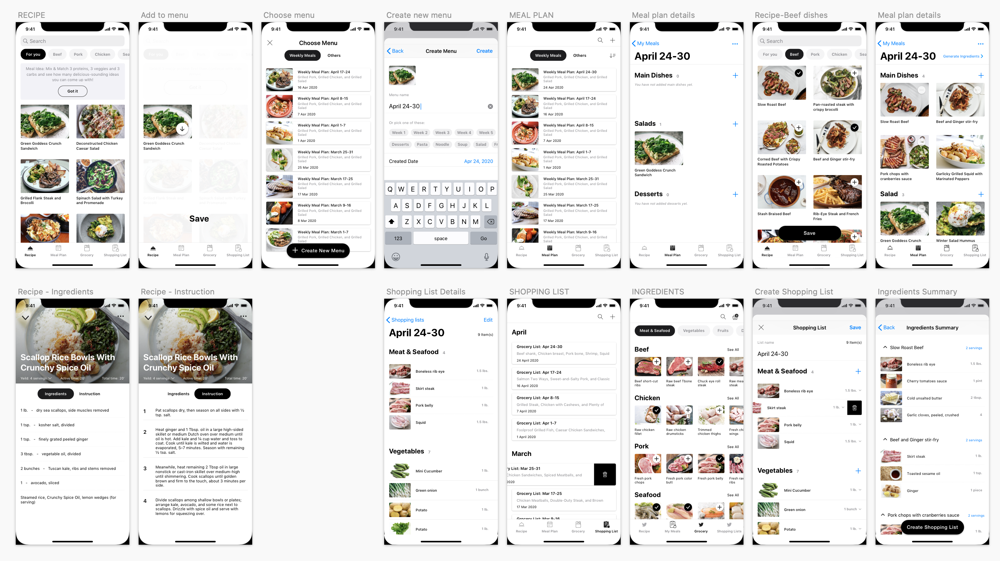
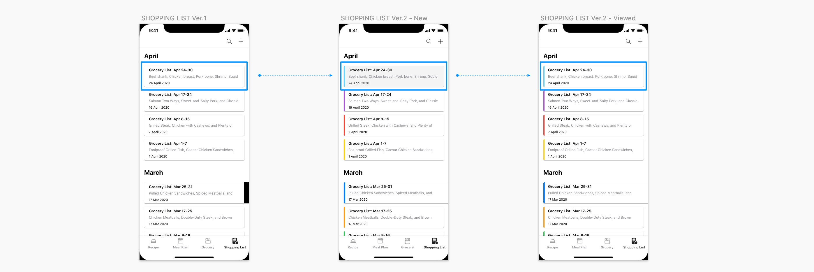

Redesign VPL App
Role: UX Designer
Time: 2020 / 2021
Vaughan Public Library (VPL) mobile app is created to offer the VPL's users on the book's searching and borrow tracking. Additionally, the app provides readers a higher intuitive, appealing and easy-to-browse experience when using it.
Overview
Established a structured, Atomic Design-based system to unify UI components, improve collaboration, and enable scalable, consistent design from the start. Standardixed design element, optimized workflows, and ensured seamless developer handoff.
Key outcomes
- Improved design consistency and efficiency, reducing redandant components and streamlining UI updates
- Accelerated design and development workflows, cutting production time and improving collaboration
- Validated system adoption through team training and integration into multiple projects
- Established a scalable, maintainable design system, ensuring long-term flexibility and growth
- Created a living documentation framework, aligning design and development teams for future scalability
Table Of Content
- Introduction
- Process
- Phase 1. Design Tokens
- Phase 2. Atoms (Building blocks)
- Phase 3. Molecules (Component structure)
- Phase 4. Organisms (Modular Design)
- Phase 5. Templates
- Phase 6. Pages (Interface implementation)
- Phase 7. Documentation and Govenance
- Results
- Takeaways
Introduction
Vaughan Public Library (VPL) is a public library system in Ontario, Canada. The VPL extends public access to information and services through 10 branches of the library, physical and virtual (www.vaughanpl.info) as well as a mobile application. As a user, I felt that it seems to be a highly practical app but there is still a constraint about search feature which is quite complicated. Moreover, the design interface could be improved to be more attractive. I decided to redesign this app as a personal project: Solve The Problem I Met In Life and I think a new look would increase the usability of the app and hope that users will be more enjoyable when using it.
The process
User research
Target users & Use cases
I started the project by defining the main target audience group: the LOCALS. I focused on establishing a thorough understanding of the target audience acquired from their behavioral patterns, possible needs and goals.
- Follow that, I conducted an analysis of the challenges they might be facing and here are the following use cases for them:
- Search/browse books
- Get descriptions & reviews for books
- Borrowing & returning books
- Find & download ebooks, audiobooks
- Check availability & map the locations
- Check due date & renew
- Check branch hours or get directions
Users feedback
Besides, reading the users feedback for this app on Google Play and App Store helps me get more insight about what's good and what needs to be improved in order to meet the users expectation. Based on the collected feedback, I grouped those comments into three main groups: UI pain point, Search & Filter pain point, and Explore books pain point. The followings are several key takeaways from that.

- UI Layout. Most users commented that the app provided the basic features but it needs to be improved the UI, that they don't like the look. It feels like 80s design, clunky and outdated.
- Search & Filter. There are many filtering options that allows users to narrow down a number of results, however these options makes them confuse and they're not sure which criteria should be used. Furthermore, it is only possible to select one category at a time.
- Explore books. As some comments said that it's hard to find a new book to read since it's lack of book's description and reader's reviews as well. Also, there are many suggestions about adding the "book suggestion" feature which based on the previous books or books from the same series/author that they had read before. That's kind a good idea to think about.
User interview
- I conducted quick interviews with 3 users to gain deeper insight about their experience with this app. Some evaluative questions were given out:
- Why do you use VPL app? What do you use it for?
- How often do you use the app?
- What is your main goal when using the app?
- How do you find a new book to read?
- Is there anything you often look for on the app that is missing or hard to find?
Key findings:
- Ingeneral, users noted that this is a convinient and handy app, it does the basics but it's not intuitive much.
- From the functions, experience related to finding a book, including searching & filtering the results got the bad comments. Follows users, they can quickly find exactly the book they need unless somebody recommended them before, otherwise, they felt impatient and frustrated sometimes during searching process.
Empathy map

Pain points
- Lack of book suggestion in Explore screen and below of each book's details. On Explore, it just shows Recently Reviewed Books, to see the others such as New Arrivals / Just Ordered / Bestsellers / eBooks, users have to select to see.
- No search suggest drop-down list feature to provide options to select.
- Can't complete filtering search at once. Each time you change one you have to wait for it to apply, and then search before you can add another.
Ideate
App Map
Starting from the pain point, I made several iteration sketches to find solutions for solving the problems and introduce new features.

Ideate
Wireframing
Starting from the pain point, I made several iteration sketches to find solutions for solving the problems and introduce new features.
Showing more books suggestions
Encourage users' engagement with book recommendations by presenting them prominently, segmenting suggestions into clear categories. In this way, it will increase the ability to interact with suggestions of users and provide a valuable source of books for them. On the Explore screen, users now can quickly browse the highlighted books just by swiping to the left on each book's category. Similarly, listing recommended books right below of book details so that it will be able to direct users to items relevant to their interest.

Using search suggest drop-down list
Showing the user shortcuts, while the query is typed into a text box. It provides them options to select. The suggested queries then enable the users to complete the required search quickly.
Adjust Search and minimize Filter function
Showing the user shortcuts, while the query is typed into a text box. It provides them options to select. The suggested queries then enable the users to complete the required search quickly.
Design
Mid fidelity wireframe


High fidelity wireframe
Usability test
I took these layouts and tested with 5 users, asking them to complete 2 tasks:
- Create a meal plan for a week that includes main corses, salad, fruit or dessert then generate the appropriate grocery list for ingredients shopping.
- Create a new grocery shopping list in case you had a ready Meal Plan in your mind already.
By watching them navigate the app, also listening their concerns, I realized there are two common things made them quite confuse.
Problem #1: Users did not pay attention much to Generate Ingredients feature.
When users finished adding dishes to create a Meal Plan, at MEAL PLAN DETAILS screen, instead of Generate Ingredients right away in order to quickly create Grocery Shopping List, most of them have a tendency to switch to GROCERY to pick the essential ingredients. It meant the action [Generate Ingredients] was ignored. Users did not pay attention much to that fucntion. As they said, since it's too small to catch the eyes.
=> Solution: Move [Generate Ingredients] to the bottom of screen and transformed it to an actionable button. This way, users were instructed what's the next step was supposed to do.

Problem #2: Users were confuse about which shopping list was the one they had just created.
After finished creating a grocery shopping list, users didn't know exactly wether the list they had just created was saved sucessfully or not? Since there wasn't different at all from the old items with the new one. The layout was just basically black and white and the new one just looks the same as others.
=> Solution: Use indication colors to distinguish the items in the list. Besides, highlighted the one that has been creating, unless users tap to see it.
Results
- 100% of users noticed and used the "Generate Ingredients" button.
- 4/5 users explicitly mentioned the improved visibility and clarity of the grocery list feature.
- No more confusion about distinguishing the new list from old ones.
Prototype
Takeaways
It was really rewarding to create a solution to a problem on my own. I got to navigate almost all of the UX process solo and learn my strengths and weaknesses along the way. Understanding the UX process through a user-centered lens has given me a great amount of information needed to design apps with the user in mind by understanding the motivations and desires of them.